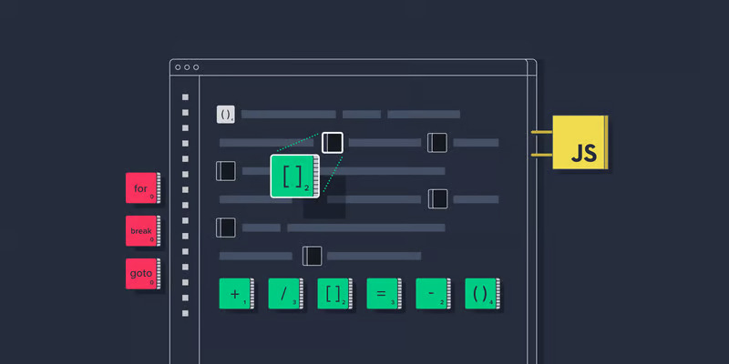

Functional Programming is a paradigm of building computer programs using expressions and functions without mutating state and data. In this article, we will talk about doing functional programming using JavaScript. We will also explore various JavaScript methods and features that make it possible. In the end, we will explore different concepts associated with functional programming and see why they are so powerful.
By respecting these restrictions, functional programming aims to write code that is clearer to understand and more bug resistant. This is achieved by avoiding using flow-control statements (for, while, break, continue, goto) which make the code harder to follow. Also, functional programming requires us to write pure, deterministic functions which are less likely to be buggy.
In this article, we will talk about doing functional programming using JavaScript. We will also explore various JavaScript methods and features that make it possible. In the end, we will explore different concepts associated with functional programming and see why they are so powerful.
Before getting into functional programming, though, one needs to understand the difference between pure and impure functions.
Functional programming is a well-researched and robust paradigm of writing computer programs. With the introduction of ES6, JavaScript allows for a much better functional programming experience than ever before.